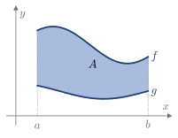
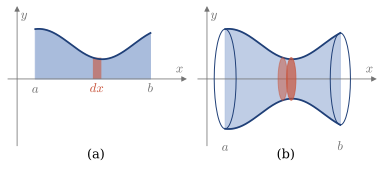
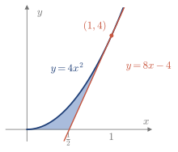
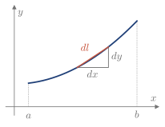
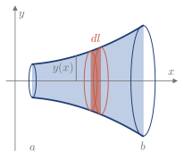

5.7 Otras aplicaciones de la integral
La integral es, en el fondo, una suma continua de cantidades muy pequeñas, y por eso tiene muchas aplicaciones. Algunas ya las hemos visto, como las áreas y los valores medios; aquí se ven otras.
Áreas
Si f\ge g en [a,b], cada rectángulo tiene altura f-g, y el área entre las dos curvas es la integral de esa diferencia (Figura 5.10).

Figura 5.10. Área entre las gráficas de f y g.
Recuerda
- Área entre curvas: A=\displaystyle\int_a^b\big[f(x)-g(x)\big]\,dx, si f\ge g en [a,b].
- Si la región se describe mejor con x en función de y: A=\displaystyle\int_c^d\big[x_2(y)-x_1(y)\big]\,dy.
Ejemplo 5.27
Calcular el área de un círculo de radio R.
De x^2+y^2=R^2, la mitad superior es y=\sqrt{R^2-x^2}. Por simetría, con el cambio x=R\sin t: A=4\int_0^R\sqrt{R^2-x^2}\,dx=4R^2\int_0^{\pi/2}\cos^2t\,dt=4R^2\cdot\frac\pi4=\pi R^2.
Volúmenes de revolución
Al girar alrededor de OX la región bajo y(x), cada franja de ancho dx genera un disco de radio y(x) (Figura 5.11): dV=\pi\,y(x)^2\,dx.

Figura 5.11. (a) Franja de ancho dx. (b) Disco que genera al girar alrededor de OX.
Recuerda
- Giro alrededor de OX: V=\pi\displaystyle\int_a^b y(x)^2\,dx
- Giro alrededor de OY: V=\pi\displaystyle\int_c^d x(y)^2\,dy
- Región entre dos curvas, y_2\ge y_1\ge0, alrededor de OX: V=\pi\displaystyle\int_a^b\big[y_2(x)^2-y_1(x)^2\big]\,dx
Ejemplo 5.28
Calcular el volumen de un cono de radio R y altura h. (2021/22 6E)
Se obtiene al girar alrededor de OX la recta y=\dfrac{R}{h}\,x, con 0\le x\le h: V=\pi\int_0^h\frac{R^2}{h^2}\,x^2\,dx=\frac{\pi R^2}{h^2}\cdot\frac{h^3}{3}=\frac13\pi R^2h.
Ejemplo 5.29
Calcular el volumen de una esfera de radio R. (2012/13 3E)
Se obtiene al girar alrededor de OX la semicircunferencia y=\sqrt{R^2-x^2}: V=\pi\int_{-R}^R(R^2-x^2)\,dx=\pi\left[R^2x-\frac{x^3}{3}\right]_{-R}^R=\frac43\pi R^3.
Ejemplo 5.30
Sea y=4x^2. Calcular el área de la región del primer cuadrante limitada por la curva y su tangente paralela a y=8x, y el volumen que genera al girar alrededor de OX. (2016/17 6E)

La tangente tiene pendiente 8: y'=8x=8 da x=1, el punto (1,4) y la recta y=8x-4, que corta a OX en x=\frac12. Hay dos tramos, porque la frontera inferior cambia: A=\int_0^{1/2}4x^2\,dx+\int_{1/2}^1\big[4x^2-(8x-4)\big]\,dx=\frac16+\frac16=\frac13, V=\pi\int_0^{1/2}16x^4\,dx+\pi\int_{1/2}^1\big[16x^4-(8x-4)^2\big]\,dx=\frac{\pi}{10}+\frac{13\pi}{30}=\frac{8\pi}{15}.
Si el eje de giro no es OX, el radio del disco es la distancia de la curva al eje.
Ejemplo 5.31
Calcular el volumen del cuerpo generado al girar D=\{1<y<2\sin x,\ 0<x<\pi\} alrededor de la recta y=1. (2015/16 3E)
Las curvas se cortan donde 2\sin x=1, en x=\frac\pi6 y x=\frac{5\pi}6. El radio es 2\sin x-1: V=\pi\int_{\pi/6}^{5\pi/6}(2\sin x-1)^2\,dx=\pi\int_{\pi/6}^{5\pi/6}(3-2\cos2x-4\sin x)\,dx=\pi\left(2\pi-3\sqrt3\right).
Longitud de arco
Un trozo pequeño de la curva es la hipotenusa de un triángulo de catetos dx y dy (Figura 5.12). Como dy=y'(x)\,dx: dl=\sqrt{dx^2+dy^2}=\sqrt{1+y'(x)^2}\,dx.

Figura 5.12. Trozo de arco dl y sus catetos dx y dy.
Recuerda
Longitud del arco de y(x) entre a y b: \;l=\displaystyle\int_a^b\sqrt{1+y'(x)^2}\,dx
Ejemplo 5.32
Calcular el perímetro de una circunferencia de radio R. (2019/20 6E)
Un cuarto de circunferencia es y=\sqrt{R^2-x^2}, con x\in[0,R], y y'=\dfrac{-x}{\sqrt{R^2-x^2}}. Por tanto, 1+y'^2=\dfrac{R^2}{R^2-x^2} y P=4\int_0^R\sqrt{1+y'(x)^2}\,dx=4R\int_0^R\frac{dx}{\sqrt{R^2-x^2}}. Con el cambio x=R\sin t, dx=R\cos t\,dt y \sqrt{R^2-x^2}=R\cos t:1 P=4R\int_0^{\pi/2}dt=4R\cdot\frac\pi2=2\pi R.
Superficie de sólidos de revolución
Al girar alrededor de OX un trozo de arco de longitud dl, se genera una banda de radio y(x) y ancho dl (Figura 5.13). Su área es dS=2\pi\,y(x)\,dl=2\pi\,y(x)\sqrt{1+y'(x)^2}\,dx.

Figura 5.13. Banda de ancho dl y radio y(x).
Recuerda
Superficie generada al girar y(x)\ge0 alrededor de OX: \;S=2\pi\displaystyle\int_a^b y(x)\sqrt{1+y'(x)^2}\,dx
Ejemplo 5.33
Calcular el área de una esfera de radio R.
Se obtiene al girar alrededor de OX la semicircunferencia y=\sqrt{R^2-x^2}. Como en el Ejemplo 5.32, \sqrt{1+y'^2}=\dfrac{R}{\sqrt{R^2-x^2}}, así que y\sqrt{1+y'^2}=R: S=2\pi\int_{-R}^R R\,dx=4\pi R^2.
Con los contenidos de esta sección puedes hacer los ejercicios 5.16–5.23.
Notas
El integrando no está acotado en x=R: es una integral impropia, un tipo de integral que se estudia en la sección siguiente. Aquí el resultado es correcto.↩︎